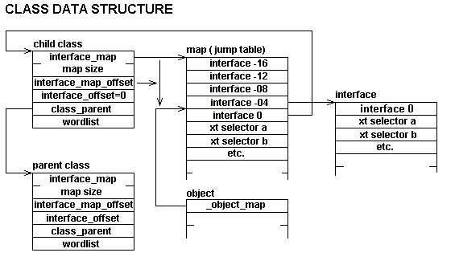
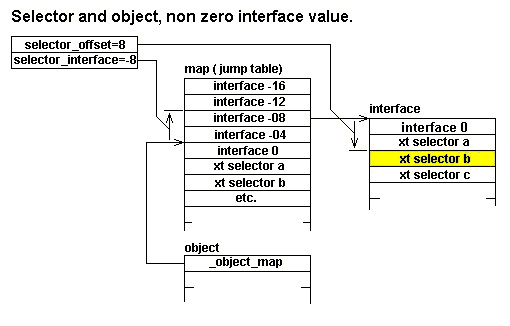

Sept 25 1998 Charles Esson Coding changed to suit COLDFORTH standards
Sept 26 1998 Charles Esson Tables stored in Dictionary
Oct 11 1998 Charles Esson Cross compiler support
March 18 2000 Charles Esson Added look
July 2001 Charles Esson Changed object to base_class when writing manual; the reason should be obvious.
May 2003 Charles Esson change to suit uCforth, a ANSI standard xcompiler. May 2003 Charles Esson concept of interface removed. Much better to include a pointer to an object and add methods to access the methods of interest in the object. Reduces complexity of code, and speeds up execution.
This file retains M.Anton Ertl copyright: This file is in the public domain. NO WARRANTY.
Create a heap table copying data from another region.
\ target version
: _save_mem ( addr1 u -- addr2 u )
SWAP >R \ u (--
DUP \ u u (--
ALLOCATE THROW \ u add2 (--
SWAP \ addr2 u (--
2DUP \ addr2 u addr2 u(--
R> -rot \ addr2 u addr1 addr2 u(--
MOVE
;
\ host version
forth&host : _save_mem ( addr1 u -- addr2 u )
SWAP >R \ u (--
DUP \ u u (--
ALLOCATE THROW \ u add2 (--
SWAP \ addr2 u (--
2DUP \ addr2 u addr2 u(--
R> -rot \ addr2 u addr1 addr2 u(--
MOVE
;
host&forth
forth&host : _save_mem_from_target ( addr1 u -- addr2 u )
SWAP >R \ u (--
DUP \ u u (--
ALLOCATE THROW \ u add2 (--
SWAP \ addr2 u (--
2DUP \ addr2 u addr2 u(--
R> -rot \ addr2 u addr1 addr2 u(--
move_from_target
;
host&forth
Redefine RESIZE to ALLOCATE if the input address is zero.
: _resize ( a-addr1 u -- a-addr2 ior )
OVER IF
RESIZE
ELSE
NIP ALLOCATE
THEN
;
forth&host : _resize ( a-addr1 u -- a-addr2 ior )
OVER IF
RESIZE
ELSE
NIP ALLOCATE
THEN
;
host&forth
Extend memory block allocated from the heap by u address units the (possibly reallocated) piece is addr2 u2, the extension is at addr
: _extend_mem ( addr1 u1 u -- addr addr2 u2 )
OVER >R \ addr u1 u(--
+ \ addr total(--
DUP >R \ addr total(--
_resize THROW \ addr2(--
R> OVER \ addr2 total addr2(--
R> + \ addr2 total addr(--
-rot \ addr addr2 total(--
;
forth&host : _extend_mem ( addr1 u1 u -- addr addr2 u2 )
OVER >R \ addr u1 u(--
+ \ addr total(--
DUP >R \ addr total(--
_resize THROW \ addr2(--
R> OVER \ addr2 total addr2(--
R> + \ addr2 total addr(--
-rot \ addr addr2 total(--
;
host&forth
This system makes heavy use of jump tables, this copies the table to the dictionary. In both the target and host case a reference has to be added for every cell because every cell contains an absolute reference
: _block_to_dictionary ( addr1 u -- addr2 u )
HERE OVER 0 DO
DUP I + add_reference
cell +LOOP
DROP
TUCK \ u addr1 u(--
HERE SWAP \ u addr1 here u(--
MOVE \ u
HERE SWAP \ add2 u(--
DUP ALLOT \ dr2 u(--
;
forth&host : _block_to_dictionary ( addr1 u -- addr2 u )
host&forth HERE
forth&host OVER 0 DO
DUP I +
host&forth
add_reference
forth&host
cell +LOOP
DROP
forth&host TUCK \ u addr1 u(--
host&forth HERE
forth&host SWAP \ u addr1 here u(--
host&forth move_to_target \ u
HERE
forth&host SWAP \ add2 u(--
DUP
host&forth ALLOT \ addr2 u(--
;
host&forth
An object always starts with a pointer to it's jump table, called a map in the follow documentation. The first location in the map points back to the class table, positive cells contain xt values for the various methods. Selectors contain a map offset.
\ this will create valid host code as well as target code
struct
cell% field _object_map+
end_struct _object%
This image is out of date. 
Note: the following structure is started with a map pointer field.
struct
cell% field _class_map+ \ first cell contains the length
\ second cell contains the map base address.
\ In this code they are always retrieved with 2@
\ name must be given for pointer
\ as reference
cell% field _class_map_pointer+
cell% field _class_parent+
cell% field _class_wordlist+ \ instance_variables and other protected words
\ Use: class_instance_size+ 2@ ( class -- align size ),
\ gives the size specification for an object of the specified class.
\ and the alignment required.
double% field _class_instance_size+ ( class -- addr ) \ objects
end_struct class%
Following describes a selectors parameter area. A selector is created with the defining word method.

struct
cell% field _selector_offset+ \ The offset within the map, relative to the
\ object-map pointer, a positive number.
\ If the selector is for a class method
\ (selector_interface is zero), the offset is
\ relative to the pointer contained at the head
\ of the object. I
end_struct _selector%
Maps are not defined explicitly.
The class data structure contains a field _class_map+, this field points to the base address of the map. Cell 0 of the map points back to the class. Cell 1 contains the execution token for the first selector.
This ram_variable contains the class currently being defined. Set on class
uvariable %current_class ( -- addr )
forth&host ram_variable %t_current_class
host&forth
Used as the base method when a selector is defined, overridden with override.
: _no_method ( object-- )
TRUE ABORT" no method defined for this object/selector combination"
;
Creates a selector and makes xt its method. Has to be used between class end_class.
: method \ parent( xt "name" -- )
\ child ( ??? object --???)
CREATE
%current_class @ _class_map+ 2@ \ xt map-addr map-size(--
DUP \ xt map-addr map-size map-size(--
\ _selector_offset
,
1 CELLS _extend_mem \ xt addr-new map-addr-new map-size-new(--
%current_class @ _class_map+ 2! \ xt addr-new(--
! \ (--
DOES>
\ object pfa(--
_selector_offset+ @ \ object selector_offset(--
OVER _object_map+ @ + \ object xtp(--
@execute
;
\ has to be done line this because of [parent] etc. They assume that the method is
\ done using DOES> and CREATE.
\ assembler&host&forth
\ HERE
\ S ) A0 MOV
\ DUP HERE - ??2 ALLOT tw@ forth&host CONSTANT #s_)_a0_mov
\ assembler&host&forth
\ HERE
\ $10 # A0 ADD
\ DUP HERE - ??6 ALLOT tw@ forth&host CONSTANT ##_a0_add
\ assembler&host&forth
\ HERE
\ A0 ) A0 MOV
\ DUP HERE - ??2 ALLOT tw@ forth&host CONSTANT #a0_)_a0_mov
\ assembler&host&forth
\ HERE
\ A0 ) JSR
\ DUP HERE - ??2 ALLOT tw@ forth&host CONSTANT #a0_)_jsr
\ host&forth
\ forth&host : method, ( host_xt_addr --)
\ \ at runtime the object address is on the stack
\ host&forth
\ \ the object
\ #s_)_a0_mov tw,
\ \ the map,
\ #a0_)_a0_mov tw,
\ \ the offset will never be zero
\ ##_a0_add tw,
\ ghost_data @ t,
\ \ the method xt
\ #a0_)_a0_mov tw,
\ #a0_)_jsr tw,
\ ;
forth&host : method \ parent( xt "name" -- )
\ child ( ??? object --???)
host&forth [CREATE]
\ forth&host ['] method, host&forth change_ghost_action
host&forth %t_current_class
forth&host @
host&forth _class_map+ 2t@ \ xt map-addr map-size(--
forth&host DUP \ xt map-addr map-size map-size(--
host&forth t, \
forth&host DUP , \ add to the host entry
forth&host 1 CELLS _extend_mem \ xt addr-new map-addr-new map-size-new(--
host&forth %t_current_class
forth&host @
host&forth _class_map+ 2t! \ xt addr-new(--
\ this is in the host, will be copied to target
\ and have references added later.
forth&host ! \ (--
host&forth
DOES>
\ this stuff is in the target
\ object data_field(--
_selector_offset+ @ \ object selector_offset(--
OVER _object_map+ @ + \ object xtp(--
@execute
;
host&forth
Given an object a method can call itself in the given object. It does have it's uses.
: _(recurse_class) ( object selector_offset --)
OVER _object_map+ @ + \ object xtp(--
@execute
;
\ the map is extended as the methods are added
\ the current length is the method offset.
\ Note this calls the method pointed to by the object, it may be something
\ else if the method has been overridden
: recurse_method \ parent( -- )
\ child ( ??? object --???)
%current_class @
_class_map+ 2@ \ map-addr map-size(--
NIP \ map_method_offset
\ offset(--
POSTPONE LITERAL
POSTPONE _(recurse_class)
; IMMEDIATE
forth&host : recurse_method, ( xha--)
DROP
host&forth %t_current_class
forth&host @
host&forth _class_map+ 2t@ \ map-addr map-size(--
NIP \ map_method_offset
\ offset(--
host&forth POSTPONE LITERAL
host&forth POSTPONE _(recurse_class)
;
host&forth
-1 forth&host ' recurse_method, ghost_word recurse_method
host&forth
Creates selector in the current class and its descendent's; you can set a method for the selector in the current class with overrides.
: selector ( "name" -- ) \ objects
['] _no_method method
;
forth&host : selector ( "name" -- ) \ objects
host&forth ['] _no_method
method
forth&host
;
host&forth
map is the pointer to class's method map; it points to the place in the map to which the selector offsets refer (i.e., where object-map points to).
: class->map ( class -- map )
_class_map+ 2@ \ map-addr map-size(--
DROP \ map-addr(--
;
The class is always in the target. The map may be in the host or target. If used against the class pointed to by %t_current_class, the map will still be in a buffer. If used against any other class the map will be in the target.
forth&host : class->map ( class -- map )
host&forth _class_map+ 2t@ \ map-addr map-size(--
forth&host DROP
;
host&forth
xt is the new method for the selector selector_xt in class_map.
: _class_override! ( xt selector_xt class_map -- )
SWAP \ xt class_map selector_xt(--
>BODY \ xt map selector_pfa(--
_selector_offset+ @ + !
;
xt is in target, class_map is in host
forth&host : _buffer_class_override! ( xt selector_xt class_map -- )
\ class_map is still in the host
forth&host SWAP \ xt class_map selector_xt(--
host&forth t_xt>dfa \ xt class_map selector_pfa(--
_selector_offset+ t@
forth&host +
host&forth !
;
host&forth
Replace method for selector with xt. For this to work %current_class must be pointing to a class.
: overrides ( xt "selector" -- )
' \ xt xt_selector(--
%current_class @ class->map \ xt xt_selector class_map(--
_class_override!
;
forth&host : overrides ( xt "selector" -- )
host&forth ' \ xt xt_selector(--
forth&host %t_current_class @
host&forth class->map \ xt xt_selector class_map(--
host&forth _buffer_class_override!
;
host&forth
: _add_class_order ( ??? n1 class -- wid1 ... widn n+n1 )
DUP >R \ n1 class(--
_class_parent+ @ \ n1 parent(--
?DUP IF
RECURSE \ first add the search order for the parent class
THEN
R> _class_wordlist+ @ \ ??? nx wid(--
SWAP 1+ \ ??? wid nx+1(--
;
forth&host : _add_class_order ( ??? n1 class -- wid1 ... widn n+n1 )
forth&host DUP >R \ n1 class(--
host&forth _class_parent+
t@ \ n1 parent(--
forth&host ?DUP IF
RECURSE \ first add the search order for the parent class
THEN
R>
host&forth _class_wordlist+ t@ \ ??? nx voct(--
forth&host SWAP 1+ \ ??? wid nx+1(--
;
host&forth
Each class has a wordlist to contain it's instance variables, the child wordlists are separate from the parents. A neat way of doing it but, you need a deep search order area to support deep class inheritance.
: _push_order ( class -- ) \ objects
\ add class's wordlists to the search-order (in front)
>R GET-ORDER R>
_add_class_order
SET-ORDER
;
forth&host : _push_order ( class -- ) \ objects
\ add class's wordlists to the search-order (in front)
forth&host >R ghost_get_order R>
host&forth _add_class_order
ghost_set_order
;
host&forth
Start a new class definition as a child of a parent-class. ( --align offset) are for use by field etc.
: class ( parent-class -- align offset )
class% struct_allot >R \ parant_class(--
DUP _class_map+ 2@ _save_mem \ parent_class map_base map_n(--copy the jump table to a new location on heap.
R@ _class_map+ 2! \ parent_class(--
\ Note we are storing here a pointer back to the class.
\ This is stored at interface 0, so interface 0 is yourself.
\ The map is still in the host, we just created it.
R@ DUP class->map !
\ Following is all pretty obvious.
DUP R@ _class_parent+ !
\ this is the version that is used in the application
\ the code uses this value needs a DP_offset
\ because classes defined in the kernel and application
\ are treated the same.
WORDLIST DP_data_offset R@ _class_wordlist+ !
R@ %current_class !
R> _push_order \ parent_class(--
_class_instance_size+ 2@
;
While cross compiling the classes contain ghost_wordlist values. at the end these have to be converted to a WORDLIST by taking the WORDLIST pointer out of the ghost_wordlist and replacing the ghost_wordlist pointer with it.
\ has to be in dictionary as link and address have to follow.
forth&host VARIABLE _%class_wordlist_fix
\ this describes data in the host.
zero
DUP CONSTANT _#cwfix_link CELL+
DUP CONSTANT _#cwfix_target_address CELL+
DROP
Before execution the target cells pointed to contain the address of a ghost wordlist this has to be converted to a WORDLIST.
forth&host : object_fix_wordlist
_%class_wordlist_fix BEGIN
@ ?DUP
WHILE
DUP _#cwfix_target_address + @ \ link target_address(--
DUP t@ \ link target_address voct(--
_#vocg_target_image + @ \ link target_address wid(--
host&forth
DP_data_offset
forth&host
SWAP
t!
REPEAT
;
forth&host : class ( parent-class -- align offset )
host&forth
\ puts the structure into the current target dictionary
class% struct_allot \ parent_class target_addr(--
forth&host >R \ parant_class(--
R@ host&forth _class_map_pointer+ add_reference forth&host
R@ host&forth _class_parent+ add_reference forth&host
DUP
\ copy the jump table to a new location on heap.
host&forth _class_map+ 2t@ _save_mem_from_target \ parent_class map_base map_n(--
forth&host R@
host&forth _class_map+
\ class in target
\ We have a pointer to a host table in the target this will be fixed
\ when the table is copied to the target.
forth&host 2t! \ parent_class(--
\ Same interface map offset
\ Note we are Storeing here a pointer back to the class.
\ This is stored at interface 0, so interface 0 is yourself.
forth&host R@ DUP
\ The map is still in the host
host&forth class->map
forth&host !
\ Following is all pretty obvious.
DUP R@
host&forth _class_parent+ t!
ghost_wordlist
forth&host R@
\ note that the target has a pointer to a ghost wordlist that points to
\ a target WORDLIST. We fix it all up at the end
host&forth _class_wordlist+ t!
\ Link the address into the fix link
\ this will be followed at the end of the xcompile
forth&host HERE
\ These values are going into the host&forth dictionary.
forth&host _%class_wordlist_fix @ ,
R@
host&forth _class_wordlist+
forth&host ,
_%class_wordlist_fix !
R@
host&forth %t_current_class
forth&host !
R>
host&forth _push_order \ parent_class(--
_class_instance_size+ 2t@ \ alignment count(--
;
host&forth
note: no checks, whether the wordlists are correct.
: _remove_class_order ( wid1 ... widn n+n1 class -- n1 )
BEGIN
>R NIP 1- R>
_class_parent+ @
DUP 0=
UNTIL
DROP
;
forth&host : _remove_class_order ( wid1 ... widn n+n1 class -- n1 )
forth&host BEGIN
>R NIP 1- R>
host&forth _class_parent+ t@
forth&host DUP 0=
UNTIL
DROP
;
host&forth
Drops class's wordlists from the search order. No checking is made whether class's wordlists are actually in the search order.
: _drop_order ( class -- )
>R GET-ORDER R>
_remove_class_order
SET-ORDER
;
forth&host : _drop_order ( class -- )
forth&host >R ghost_get_order R>
host&forth _remove_class_order
host&forth ghost_set_order
;
host&forth
Ends a class definition. The resulting class is class.
: end_class_noname ( align offset -- class )
%current_class @
DUP _drop_order
_class_instance_size+ 2!
%current_class @ _class_map+ 2@ \ addr1 length1(--
2DUP _block_to_dictionary \ addr1 length1 addr2 length2(--
%current_class @ _class_map+ 2! \ addr1 length1(--
DROP FREE THROW \ (--
%current_class @
\ Get in first prevent people playing games that make the code hard to read.
zero %current_class !
;
forth&host : end_class_noname ( align offset -- class )
host&forth %t_current_class
forth&host @ DUP
host&forth _drop_order
_class_instance_size+ 2t!
host&forth %t_current_class
forth&host @
host&forth _class_map+ 2t@ \ addr1 length1(--
forth&host 2DUP
host&forth _block_to_dictionary \ addr1 length1 addr2 length2(--
host&forth %t_current_class
forth&host @
host&forth _class_map+ 2t! \ addr1 length1(--
forth&host DROP FREE THROW \ (--
host&forth %t_current_class
forth&host @
\ Get in first prevent people playing games that make the code hard to read.
forth&host zero
host&forth %t_current_class
forth&host !
;
host&forth
ends a class definition. The resulting class is class.
: end_class \ parent ( align offset "name" -- )
\ child ( -- class )
end_class_noname
DUP CONSTANT
\ alter the word list name so it points to
\ the class name
\ this means all classes must use a DP referenced value
_class_wordlist+ @ DP_data_ref
last_wordname> SWAP _#wid_name + !
;
forth&host : end_class \ parent ( align offset "name" -- )
\ child ( -- class )
host&forth end_class_noname
forth&host DUP
host&forth REFERENCE
\ alter the wordlist name so it points to
\ the class name
host&forth _class_wordlist+ t@ \ voct(--
host&forth
\ need target wordlist address
_#vocg_target_image forth&host + @ \ wid(-
last_definition t_lfa>nfa SWAP #thread_name + t!
forth&host
;
host&forth
Set the compilation wordlist to the current class's wordlist.
: protected ( -- ) \ objects
%current_class @ _class_wordlist+ @ DP_data_ref
%context @ <> ABORT" Can't use in current context"
DEFINITIONS
;
forth&host : protected ( -- ) \ objects
%ghost_context @
host&forth %t_current_class
forth&host @
host&forth _class_wordlist+ t@
forth&host <> ABORT" Can't use in current context"
ghost_definitions
;
host&forth
Restore the compilation wordlist that was in effect before the last protected that actually changed the compilation wordlist.
: public ( -- ) \ objects
GET-CURRENT
%current_class @ _class_wordlist+ @ DP_data_ref <> ABORT" Can't use in the current context"
previous_definitions
;
forth&host : public ( -- ) \ objects
ghost_previous_definitions
;
host&forth
The this pointer is saved in a register.
CODE this ( -- object )
OP S -) MOV
NEXT inline
If objects have to access class specific data. This word traces back to the class head.
: @class ( object --class) _object_map+ @ @ ;
Start a method definition, at runtime object becomes new this. Setting _%save_op has exit and ; looking after the op register making separate version unnecessary. CATCH and task switches always deal with OP. This has to be the case.
: m: \ compile time ( -- xt colon-sys)
\ run-time: ( object -- )
\ _%save_op set then : exit and ; add code to look after op.
TRUE _%save_op !
:NONAME
;
forth&host : m: \ compile time ( -- xt colon-sys)
\ run-time: ( object -- )
\ _%save_op set then : exit and ; add code to look after op.
." in m:"
forth&host TRUE
host&forth _%t_save_op
forth&host !
host&forth :NONAME
;
host&forth
In following code xt ( -- ) is typically a DOES> word. Standard may not allow vocabulary change between DOES> and create bowever both version of does in use are cross compiler versions and the standard is irrelevant.
: instance_variable ( align1 size1 align size "name" -- align2 size2 )
push_definitions
%current_class @ _class_wordlist+ @ DP_data_ref SET-CURRENT
jump >R \ align1 size1 align size(--
\ as the runtime version of _create_field uses
\ CREATE this will work
_create_field
R> ,
DOES> ( pfa -- addr )
@ this +
;
\ for the xcompiler
forth&host : _do_instance ( n -- )
assembler&host&forth
OP D0 MOV
# D0 ADD
D0 S -) MOV
RTS
host&forth
inline
forth&host
\ This lays down the action of the child word in the host.
DOES> ( name execution: addr1 -- addr2 )
\ the host returns the offset
@
;
\ for the xcompiler
forth&host : instance_variable \ parent ( align1 offset1 align size "name" -- align2 offset2 )
\ child ( -- addr)
forth&host jump \ align1 offset1 align size offset1(--
>R
host&forth _create_field
R>
\ align offset offset1(--
host&forth _do_instance
;
host&forth
host&forth
xt is the method for the selector selector-xt in class. Crazy name, selector->method would be better.
: -bind- ( class selector-xt -- xt )
>BODY \ class selector_pfa(--
_selector_offset+ @ \ class method_offset
SWAP class->map \ selector_pfa map0(-
+ @ \ xt(--
;
\ The selector-xt is in the target
forth&host : -bind- ( class selector-xt -- xt )
host&forth t_xt>dfa
host&forth _selector_offset+ t@
forth&host SWAP \ selector_pfa class(--
\ Here we have to add an additional restriction,you can't bind to a method
\ in the class being built, it is assumed the map is in the target
host&forth class->map \ selector_pfa map0(--
forth&host +
host&forth t@ \ xt(--
;
host&forth
xt is the method for selector in class.
Used in the form
bind' class selector
: bind' ( "class" "selector" -- xt )
' EXECUTE \ class(--
' \ class selector_xt(--
-bind- \ xt(--
;
Execute the method for selector in class.
: bind ( ... "class" "selector" -- ... )
bind' EXECUTE
;
Compile the method for selector in class.
: [bind] \ compile-time: ("class" "selector" -- )
\ run-time: ( ??? object -- ??? )
bind'
COMPILE,
; IMMEDIATE
compile the method for @code{selector} in the parent of the current class.
: [parent] \ compile-time: ( "selector" -- )
\ run-time: (... object -- ... )
%current_class @ _class_parent+ @ ' -bind- COMPILE,
; IMMEDIATE
forth&host : [parent], \ compile-time: ( "selector" hxa-- )
DROP
\ run-time: (... object -- ... )
host&forth %t_current_class
forth&host @
host&forth _class_parent+
t@
host&forth ' \ class selector(--
host&forth -bind- \ xt(--
host&forth COMPILE,
forth&host
;
host&forth
-1 forth&host ' [parent], ghost_word [parent]
Because object has no parent class, we have to build it by hand. (instead of with class)
\ class
host&forth class% struct_allot %t_current_class
forth&host !
%t_current_class @ host&forth _class_map_pointer+ add_reference forth&host
%t_current_class @ host&forth _class_parent+ add_reference forth&host
host&forth %t_current_class 1 CELLS _save_mem \ addr n (--
host&forth %t_current_class
forth&host @
forth&host _class_map+ 2t! \ (--
host&forth 0 %t_current_class
forth&host @
host&forth _class_parent+ t! \ (--
host&forth ghost_wordlist \ twid(--
host&forth %t_current_class
forth&host @
host&forth _class_wordlist+ t! \ (--
\ link into wordlists to be fixed
forth&host HERE
\ These values are going into the host&forth dictionary.
forth&host _%class_wordlist_fix @ ,
host&forth %t_current_class
forth&host @
host&forth _class_wordlist+
forth&host ,
forth&host _%class_wordlist_fix !
host&forth _object% \ align number(--
host&forth %t_current_class
forth&host @
host&forth _push_order \ align number(--
\ Initializes the data fields of object. The method for the
\ class object just does nothing.
host&forth ' DROP method :construct ( ... object --) \ objects
host&forth ' DROP method :destruct ( ... object --)
\ prints the object. The method for the class object prints
\ the class name and the address of the object.
m: ( --)
CR SPACES ." object : object: " this .h
; method :print
end_class base_class \ runtime ( -- class )
: _init_object ( ... class object -- ) \ objects
SWAP \ object class (--
class->map \ object map(--
OVER \ object map object(--
_object_map+ ! \ object(--
:construct
;
Make a new object using the memory allocation word pointed to by xt
: _xt_new ( ... class xt -- object ) \ objects
OVER \ class xt class(--
_class_instance_size+ 2@ \ class xt alignment size(--
ROT EXECUTE \ class object(--
DUP >R \ .... object class(--
_init_object \ (--
R>
;
Create an object in the dictionary, use this when you went a permanent object
\ no head
: dictionary_new ( ... class -- object )
['] struct_allot _xt_new
;
\ a head
: dictionary_object \ parent ( ... class --)
\ child ( --object)
dictionary_new
CONSTANT
;
allocate and initialize an object of class class.
| : object_heap_allot ( size --addr)
ALLOCATE THROW
;
| : object_heap_free ( addr --)
FREE THROW
;
\ Heap object is destroyed if construction failed
: heap_object ( ... class -- object ) \ objects
DUP \ class class(--
_class_instance_size+ 2@ \ class alignment size(--
NIP object_heap_allot
DUP >R \ .... class object (--
['] _init_object CATCH ?DUP IF \ (--
\ It really is hard; do we call the destructor or not.
\ I think the answer has to be yes.
\ When aborting in the constructor you must keep this in mind.
R@ :destruct
R> object_heap_free
$abort
THEN
R>
;
\ given a object destroy it.
\ make sure you only do this with
\ heap objects
: heap_object_free ( object --)
\ This gives the object a chance to fix up
DUP :destruct
object_heap_free
;
\ kept name short as it is typed in at terminal a lot.
: .obj ( object --)
zero SWAP :print
;
Fed up with not being able to execute private methods/words in interpreted mode. It is an amazingly simple word.
: look ( object --)
DUP >op
@class _push_order
;
: unlook ( --)
this @class _drop_order
;